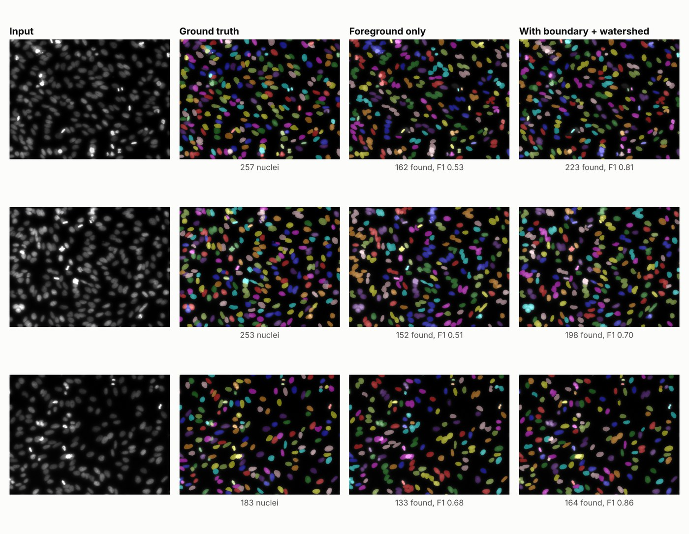

Nucleus instance segmentation
Counting and measuring cells starts with separating them, and a plain foreground mask merges nuclei that touch into one blob. My model is a U-Net that predicts two maps per image: where the nuclei are, and where two nuclei meet. A watershed step then uses the second map to split clusters into individual nuclei, and each nucleus is measured (area, shape, intensity) and exported to CSV.
With the usual 0.5 thresholds the watershed barely split anything, because the boundary map is faint inside merged blobs. I tuned the post-processing on held-out validation images (144 settings), which raised validation F1 from 0.771 to 0.847, and only then ran the test set once.
On the 50 held-out test images (2,460 nuclei), the full pipeline reaches an F1 of 0.809 at IoU 0.5. The same model without the boundary map reaches 0.731, so the split step is where the gap comes from.
| Test set, 50 images | Precision | Recall | F1 |
|---|---|---|---|
| Foreground mask only | 0.800 | 0.672 | 0.731 |
| With boundary map and watershed | 0.829 | 0.790 | 0.809 |
